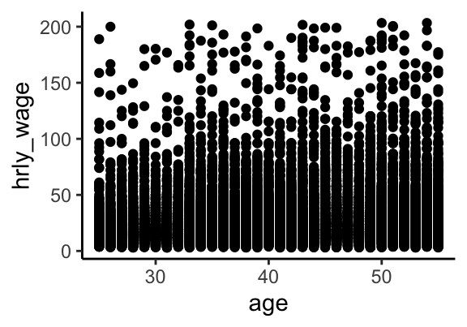
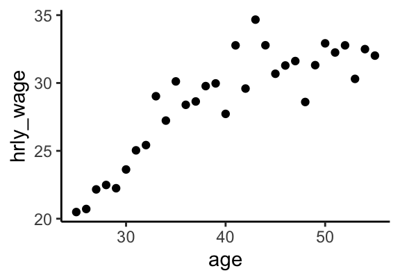
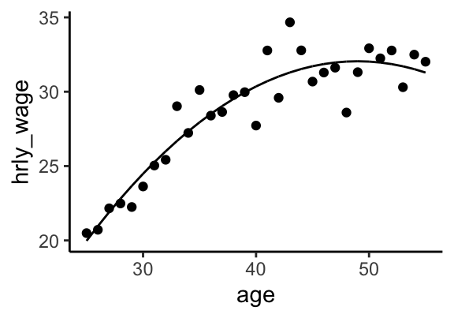
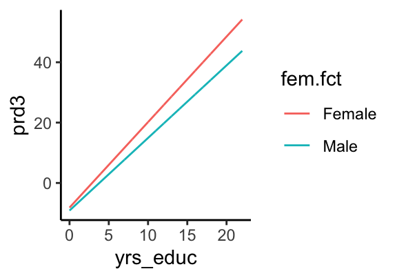
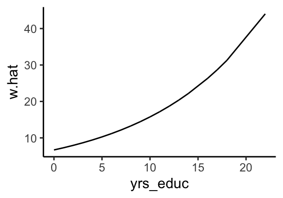

rm(list=ls())
library(tidyverse)
library(stargazer)
#setwd("~/Dropbox (CSU Fullerton)/Econ340_R")
data <- read.csv("acs2019.csv")ECON 340
Economics Research Methods
Housekeeping
Preparing the data
# Select sample and variables
data <- data %>%
filter(empstat==1) %>%
select(-fertyr, -rent)
# Remove missing values
data <- na.omit(data)Hourly wage and age
ggplot(data, aes(x=age, y=hrly_wage)) +
geom_point() + theme_classic()
Hourly wage and age
- Too much data to make sense
- Better to plot average hourly wage at each wage
- use
stat_summary()and specifyfunasmean
Average wages by age
ggplot(data, aes(x=age, y=hrly_wage)) +
stat_summary(fun = mean, geom = "point") +
theme_classic()
Hourly wage and age
To fit a quadratic model, generate age-squared term
::: {.cell layout-align=“center”}
data <- data %>% mutate(age.sq = age*age):::
Fit linear and quadratic model
::: {.cell layout-align=“center”}
mdl.lnr <- lm(hrly_wage ~ age, data) mdl.qdr <- lm(hrly_wage ~ age + age.sq, data):::
Output using
stargazer()::: {.cell layout-align=“center”}
stargazer(mdl.lnr, mdl.qdr, type="text"):::
Hourly wage and age
Plotting the fitted curve
data$prd.qdr <- predict(mdl.qdr)
ggplot(data, aes(x=age, y=hrly_wage)) +
stat_summary(fun = mean, geom = "point") +
geom_line(aes(y=prd.qdr)) + theme_classic()
Dummy variables
data %>% group_by(female) %>%
summarise(avg_wages=mean(hrly_wage))# A tibble: 2 × 2
female avg_wages
<int> <dbl>
1 0 31.3
2 1 25.8Dummy variables
mdl1 <- lm(hrly_wage ~ female, data)
mdl2 <- lm(hrly_wage ~ female + yrs_educ, data)
mdl3 <- lm(hrly_wage ~ female*yrs_educ, data)
stargazer(mdl1, mdl2, mdl3, type="text")Dummy variables
Model 2
data$prd2 <- predict(mdl2)
ggplot(data, aes(x=yrs_educ, y=prd2, group=female)) +
geom_line(aes(color=female)) + theme_classic()
Factor variables
R thinks of all variables as numeric unless you tell it otherwise
To create a factor variable (specifying levels and labels is optional)
::: {.cell layout-align=“center”}
data$fem.fct <- factor(data$female, levels = c(0,1), labels = c('Female', 'Male')) table(data$fem.fct)::: {.cell-output .cell-output-stdout} ```
Female Male 8886 8223 ``` ::: :::
Model 3
data$prd3 <- predict(mdl3)
ggplot(data, aes(x=yrs_educ, y=prd3, group=fem.fct)) +
geom_line(aes(color=fem.fct)) + theme_classic()
More Interaction Terms
mdl.int1 <- lm(hrly_wage ~ female*married, data)
stargazer(mdl.int1, type="text")More Interaction Terms
mdl.int2 <- lm(hrly_wage ~ black*female, data)
stargazer(mdl.int2, type="text")Variables with several categories
# Specify levels and labels
levs <- c(1, 2, 3, 4, 5)
labs <- c("Less than HS", "High School",
"Some College", "College Degree",
"More than College")
# Create factor variable
data$educ.fct <- factor(data$educ_cat,
levels=levs, labels=labs)Variables with several categories
data %>% group_by(educ.fct) %>%
summarise(m = mean(hrly_wage))# A tibble: 5 × 2
educ.fct m
<fct> <dbl>
1 Less than HS 17.5
2 High School 20.6
3 Some College 23.7
4 College Degree 34.2
5 More than College 43.5Variables with several categories
Want to specify to R to treat education as a categorical variable
Which of the following models is correct?
::: {.cell layout-align=“center”}
summary(lm(hrly_wage ~ educ_cat, data)) summary(lm(hrly_wage ~ as.factor(educ_cat), data)) summary(lm(hrly_wage ~ educ.fct, data)):::
Coefficients capture mean differences from the baseline
Variables with several categories
Log Transformations
Create transformed variable
::: {.cell layout-align=“center”}
data$lwage <- log(data$hrly_wage):::
Fit the model and output results
::: {.cell layout-align=“center”}
mdl.lnr <- lm(hrly_wage ~ yrs_educ, data) mdl.log <- lm(lwage ~ yrs_educ, data) stargazer(mdl.lnr, mdl.log, type="text"):::
Log Transformations
Log Transformations
How much does hourly wage change going from 10 to 11 years of education?
Linear model: $2.52
Log-level model: 100 \(\times\) 0.086 = 8.6% of $18.87 = $1.68
::: {.cell layout-align=“center”}
data %>% filter(yrs_educ==10) %>% summarise(m = mean(hrly_wage))::: {.cell-output .cell-output-stdout}
m 1 18.87474::: :::
Log Transformations
What about going from 13 to 14 years of education?
Fitting a linear model between log wages and years of education \(\rightarrow\) non-linear model between wages and years of education
::: {.cell layout-align=“center”}
# Predictions from the log-level model data$lw.hat <- predict(mdl.log) # Convert predictions back to levels data$w.hat <- exp(data$lw.hat):::
Log Transformations
ggplot(data, aes(x=yrs_educ, y=w.hat)) +
geom_line() + theme_classic()